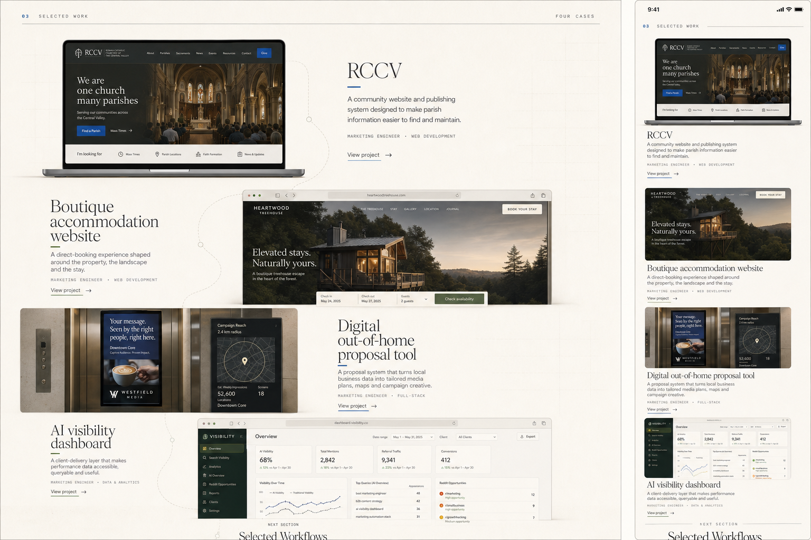
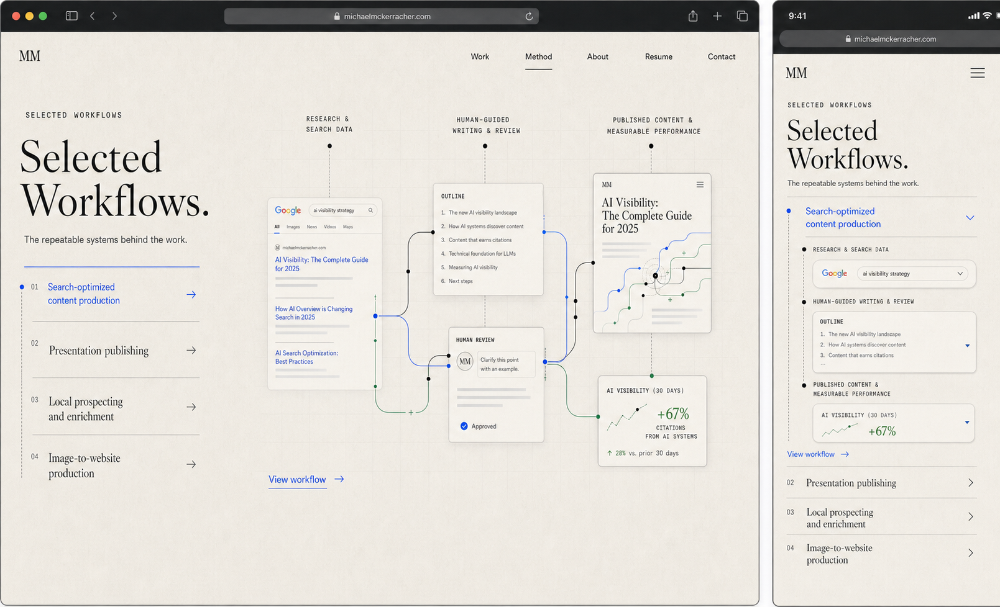
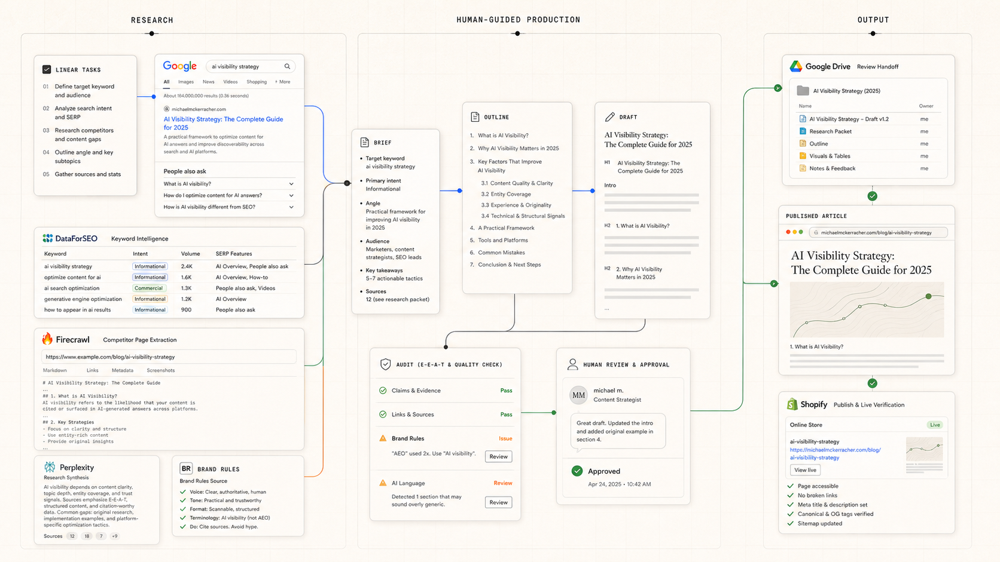
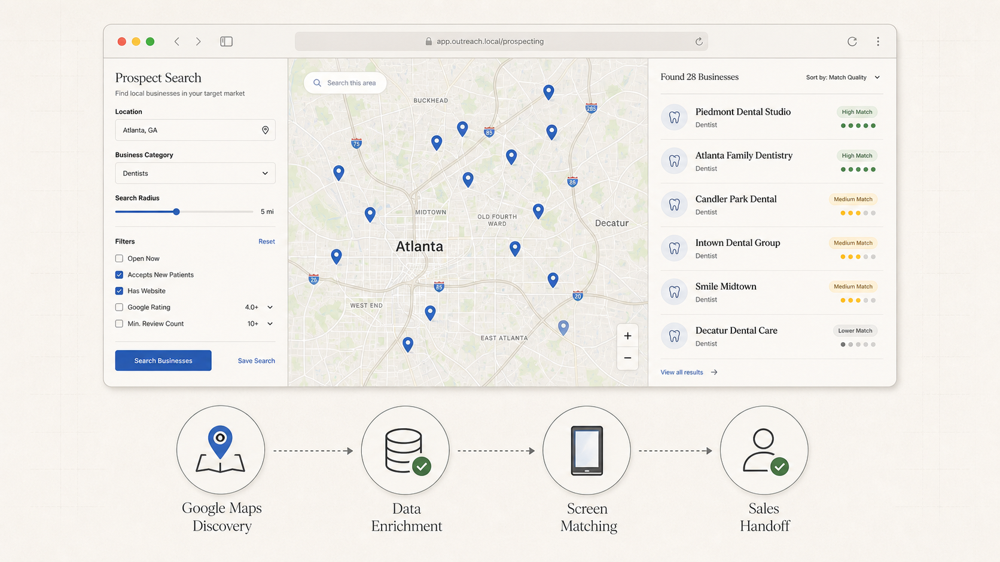

Approved reference audit
This board shows the exact files currently treated as source truth. It does not alter or reinterpret them.
Selected Work
This is the approved composition to translate into code. The previous coded Portfolio is not approved.

Selected Workflows
This controls the selector rail, dominant visual stage, supporting description, and mobile expansion behavior.

Workflow images
These two images are approved and should not be regenerated or substituted. Both are rendered over the same #f3f0eb paper field below.


Presentation publishing
This is available for review but is not part of the approved source-lock bundle.
Use #f3f0eb for the workflow section
This is the dominant background of the approved local-prospecting graphic and the midpoint of the approved paper tones. Edge fades prevent the slight baked-in image backgrounds from reading as separate rectangles.